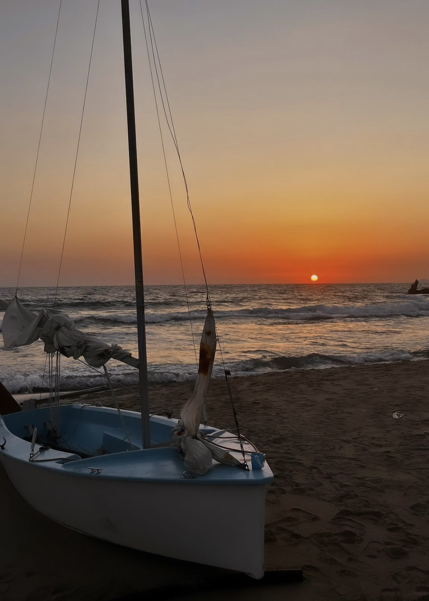
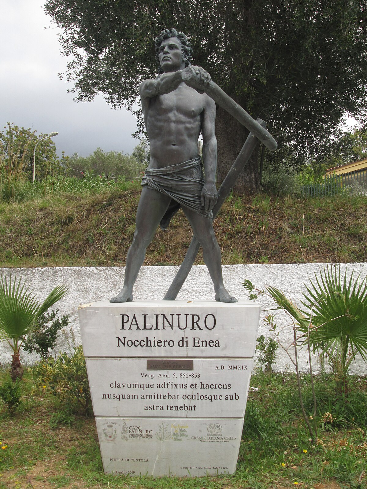
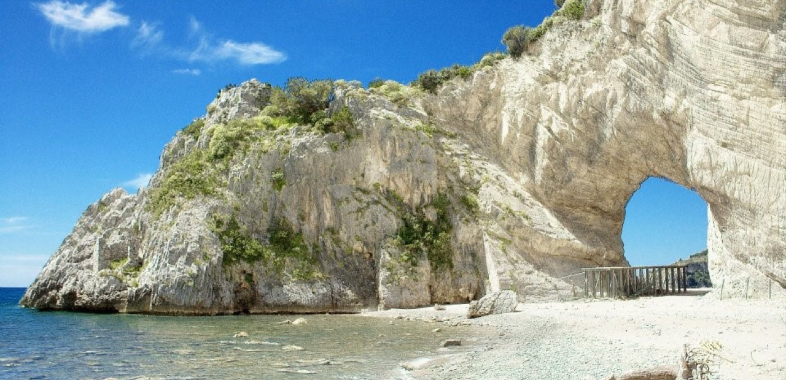
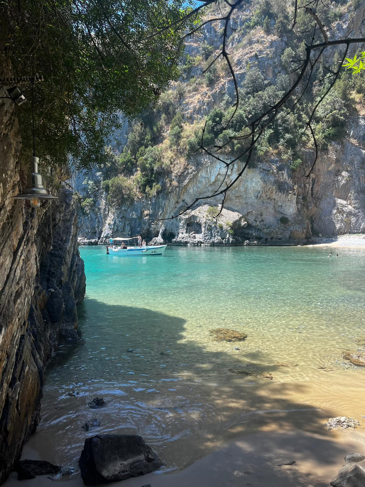
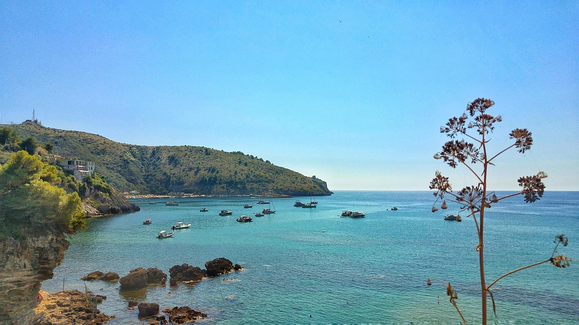

Promontori a picco sul Tirreno, spiagge Bandiera Blu, sentieri panoramici e calette dal mare cristallino.

Il nome di Palinuro deriva dal mitico nocchiero di Enea, narrato da Virgilio nell'Eneide. La leggenda vuole che qui sia approdato e morto il fedele compagno dell'eroe troiano.
Oltre alla mitologia, il territorio custodisce resti archeologici greci e romani, necropoli e piccoli siti storici visitabili nei dintorni.
Tesoro UNESCO che custodisce coste incontaminate, falesie scenografiche e una biodiversità unica nel Mediterraneo.
Spiagge premiate come le Saline e il Buon Dormire, simbolo di mare cristallino e gestione ambientale virtuosa.
Falesie imponenti, macchia mediterranea profumata e fondali trasparenti che rivelano una ricchissima vita marina.
Sei luoghi da non perdere, ognuno con la sua magia unica.

Simbolo iconico di Palinuro, questa maestosa scultura di roccia si erge come una porta sul mare, incorniciando un panorama di rara suggestione. Al tramonto si accende di riflessi dorati e rossastri, regalando scenari indimenticabili.
Il punto più vivo del borgo: passeggiate serali, bar, ristorantini, gelaterie e quell'atmosfera semplice da paese di mare. Perfetto per chi vuole uscire dall'area camper e godersi Palinuro senza complicarsi la giornata.

Sabbia dorata, mare cristallino e lo scenario maestoso di Capo Palinuro a fare da sfondo. Riconosciuta con la Bandiera Blu, è un'oasi ideale per il relax delle famiglie e i tuffi in acque protette.

Promontorio scenografico con sentieri a picco sul Tirreno, immerso nella macchia mediterranea profumata. Luogo ideale per escursioni e per ammirare tramonti mozzafiato dai colori che restano impressi negli occhi.
Una distesa infinita di sabbia dorata, ideale per lunghe passeggiate sul bagnasciuga, nuotate rigeneranti e ampi spazi dove rilassarsi lontano dalla folla, in ogni momento della stagione.
A pochi minuti da Palinuro, con calette celebri come Cala Bianca, mare straordinariamente trasparente e l'atmosfera autentica di un borgo marinaro che vive ancora al ritmo del mare.
Palinuro non è solo mare. Sentieri panoramici, macchia mediterranea e viste sul Tirreno che restano impresse negli occhi per sempre.
Giornate luminose, profumo di macchia mediterranea e i primi tuffi in acque ancora tranquille.
Acqua calma e trasparente: il momento ideale per snorkeling, kayak e giornate lente tra spiagge e calette.
Estate piena: giornate lunghe, mare caldo e serate animate dall'energia del borgo marinaro.
Il periodo più dolce: ritmo lento, mare ancora tiepido e la costa torna a respirare.